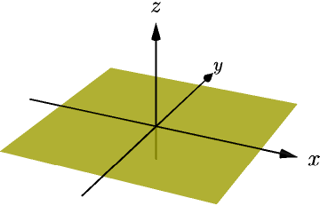
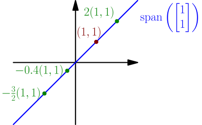
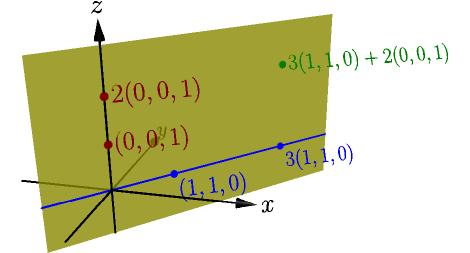
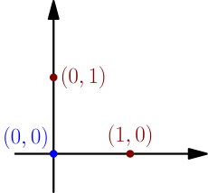

Defining span, linear dependence and linear independence¶
Recall that a linear combination of vectors means the result of multiplying each vector by a number (called a coefficient) and adding the resulting vectors. For example, $(2,3) + 4(5,6) - 7(8,9)$ is a linear combination of the vectors $(2,3)$, $(5,6)$ and $(8,9)$, with coefficients $1$, $4$ and $-7$. We now look at all linear combinations that can be made from given vectors.
The span of vectors $\vec{v_1},\vec{v_2},\dots,\vec{v_n}$ means the set of all their linear combinations. It is denoted with $\span(\vec{v_1},\dots,\vec{v_n})$.
Examples:
- By combining the vectors $(1,0,0)$, $(0,1,0)$ and $(0,0,1)$, we can create any 3D vector $(x,y,z)$, because $x(1,0,0) + y(0,1,0) + z(0,0,1) = (x,y,z)$. In other words, the span of $(1,0,0)$, $(0,1,0)$ and $(0,0,1)$ is the set of all 3D vectors. We can write this as $$ \span((1,0,0), (0,1,0), (0,0,1)) = \mathbb{R}^3. $$ Here $\mathbb{R}$ means the set of all numbers, and $\mathbb{R}^3$ means the set of all sequences of 3 numbers, i.e. the set of all 3D vectors.
-
The span of only $(1,0,0)$ and $(0,1,0)$ is the set of vectors like
$$
x(1,0,0) + y(0,1,0) = (x,y,0),
$$
where $x$ and $y$ are any numbers.
In other words, this is the set of all 3D vectors whose $z$ coordinate is zero.
This set is known as the xy plane.

The span is infinitely big in all directions, but because an image can't be infinitely big, I only drew a square-shaped part of the span.
-
We can also take the span of only one vector.
For example, the span of $(1,1)$ is the set of all vectors like $a(1,1)$,
where $a$ is any number.
They form a line going through origin
with slope 1.

- $\span((2,2))$ is the same set as $\span((1,1))$, because the vectors go in the same direction, and therefore their spans produce the same line. In general, the length of the original vectors doesn't affect their span, because the vectors get multiplied by all numbers anyway.
-
The span of $\blue{(1,1,0)}$ and $\red{(0,0,1)}$
is a plane.
On the xy plane, it looks just like the previous $\blue{\span((1,1))}$ example.
Including $\red{(0,0,1)}$ basically adds a vertical direction to the span.

See also 3blue1brown's video for better visualizations of spans.
Linear dependence¶
We consider what happens when adding a vector $\vec w$ to a span of other vectors $\vec{v_1}$, $\vec{v_2}$ and $\vec{v_3}$. To make this easier to follow, we call $\span(\vec{v_1},\vec{v_2},\vec{v_3})$ the old span, and we call $\span(\vec{v_1},\vec{v_2},\vec{v_3},\vec w)$ the new span.
Because you can choose to not use $\vec w$ by making its coefficient zero, such as $2\vec{v_1}+4\vec{v_2}-5\vec{v_3}+0\vec w$, any vector in the old span is also in the new span. However, the new span can also contain other vectors that aren't in the old span. To see when that happens, we split this into two cases:
- Assume that $\blue{\vec w}$ is in the old span. Consider any vector of the new span, such as $\green{\vec{v_1}+4\vec{v_2} + 7\vec{v_3}} + 6\blue{\vec w}$. Because $\blue{\vec w}$ is in the old span, we can replace it with a linear combination of other vectors. For example, if $\blue{\vec w = 2\vec{v_1} + 3\vec{v_2} - 2\vec{v_3}}$, we get $$ \begin{align} \green{\vec{v_1} + 4\vec{v_2} + 7\vec{v_3}} + 6\blue{\vec w} &= \green{\vec{v_1} + 4\vec{v_2} + 7\vec{v_3}} + 6\blue{( 2\vec{v_1} + 3\vec{v_2} - 2\vec{v_3})} \\ &= (\green{1} + 6 \cdot \blue2)\vec{v_1} + (\green{4} + 6 \cdot \blue3)\vec{v_2} + (\green7 + 6 \cdot \blue{(-2)}) \vec{v_3} \\ &= 13\vec{v_1} + 22\vec{v_2} - 5\vec{v_3}, \end{align} $$ which is a vector in the old span. Because any vector in the new span is also in the old span, and any vector in the old span is also in the new span, the spans must be the same set.
- Even if $\red{\vec w}$ is not in the old span, it is in the new span, because it can be written as $$ \red{\vec w} = 0\vec{v_1} + 0\vec{v_2} + 0\vec{v_3} + 1\red{\vec{w}}. $$
In short, you can't "expand" a span to contain more vectors by using vectors from the span itself, but it can be done by adding a new vector that isn't already in the span.
Adding a vector to a span can either do nothing or make the span bigger, depending on whether the vector is already in the span:
- If $\blue{\vec w}$ is already in $\span(\vec{v_1},\dots,\vec{v_n})$, then $\span(\vec{v_1},\dots,\vec{v_n},\blue{\vec w})=\span(\vec{v_1},\dots,\vec{v_n})$.
- If $\red{\vec w}$ is not in $\span(\vec{v_1},\dots,\vec{v_n})$, then $\span(\vec{v_1},\dots,\vec{v_n},\red{\vec w})$ contains all vectors of $\span(\vec{v_1},\dots,\vec{v_n})$ and other vectors too (such as $\red{\vec w}$).
Let's now define a couple new concepts:
We say that vectors $\vec{v_1},\vec{v_2},\dots,\vec{v_n}$ are linearly dependent, if one of the vectors is a linear combination of others.
Based on our previous result, linearly dependent means that the span has an unnecessary vector, and would be the same with one of the vectors removed. If this can't be done, i.e. if every vector is needed to get the span, then we say that the vectors are linearly independent.
We say that vectors $\vec{v_1},\dots,\vec{v_n}$ are linearly independent if they are not linearly dependent; that is, if no vector can be written as a linear combination of others.
Examples:
- The vectors $(1,0,0)$, $(0,1,0)$ and $(0,0,1)$ are linearly independent. For example, you can't write $(0,0,1)$ as a linear combination of $(1,0,0)$ and $(0,1,0)$, because any combination of those vectors is within the xy plane, but $(0,0,1)$ isn't. This means that all three vectors are needed for $\span((1,0,0), (0,1,0), (0,0,1))$ to be the set of all 3D vectors.
- The vectors $(1,1)$ and $(2,2)$ are linearly dependent, because you can write $(2,2)$ as the linear combination $2(1,1)$. Therefore $(2,2)$ is unnecessary in $\span((1,1),(2,2))$, and we have $$ \span((1,1),(2,2)) = \span((1,1)). $$ On the other hand, we can also view $(1,1)$ as the unnecessary vector, because $(1,1) = \frac{1}{2}(2,2)$, and therefore $$ \span((1,1),(2,2)) = \span((2,2)). $$ Earlier on this page I explained visually why $\span((1,1))=\span((2,2))$, and now we found a different way to arrive at the same result.
-
Linear dependence means that you can remove some vector without affecting the span.
This doesn't mean that you can remove any vector you want.
For example, the vectors $(0,0)$, $(1,0)$ and $(0,1)$
are linearly dependent,
and $(0,0)$ can be removed from $\span((0,0),(1,0),(0,1))$ without affecting it, because
$$
(0,0) = 0(1,0) + 0(0,1).
$$
However, removing $(0,1)$ affects the span, because $\span((0,0),(1,0))$ is the $x$ axis,
even though $\span((0,0),(1,0),(0,1))=\mathbb{R}^2$ is the set of all 2D vectors.
Removing $(1,0)$ also affects the span.

Counting vectors on both sides¶
We now have two ways to look at linear dependence and independence: on the one hand, linear dependence means that some vector is a linear combination of others, but on the other hand, it means that some vector can be removed without affecting the span. We introduce one more way to think about linear independence.
Let $\red{\vec u}$, $\blue{\vec v}$ and $\green{\vec w}$ be linearly independent vectors. Consider the equation $$ \red{a\vec{u}}+\blue{b\vec{v}}+\green{c\vec{w}} = \red{x\vec{u}}+\blue{y\vec{v}}+\green{z\vec{w}}. $$ This can be rewritten as $$ \red{(a-x)\vec{u}} = \blue{(y-b)\vec{v}} + \green{(z-c)\vec{w}}. $$ We must have $\red{a-x} = 0$, because otherwise we could divide by $a-x$, and we would get $$ \red{\vec u} = \frac{\blue{y-b}}{\red{a-x}}\blue{\vec v} + \frac{\green{z-c}}{\red{a-x}}\green{\vec w}, $$ which is impossible, because the vectors are linearly indepependent and therefore $\red{\vec u}$ can't be a linear combination of $\blue{\vec v}$ and $\green{\vec w}$. Because $\red{a-x}=0$, we must have $\red a=\red x$, and we similarly get $\blue b=\blue y$ and $\green c=\green z$. This works the same way with any number ($n$ below) of linearly independent vectors.
Let $\vec{v_1},\dots,\vec{v_n}$ be linearly independent vectors. If two of their linear combinations produce the same vector, then the coefficients of the two linear combinations must match. In other words, if $$ a_1\vec{v_1}+a_2\vec{v_2}+\dots+a_n\vec{v_n} = b_1\vec{v_1}+b_2\vec{v_2}+\dots+b_n\vec{v_n} $$ with some coefficients $a_1,\dots,a_n$ and $b_1,\dots,b_n$, then $a_1=b_1$, $a_2=b_2$, and so on.
From now on, I will refer to this as counting vectors on both sides, because we essentially count how many $\vec{v_1}$'s, $\vec{v_2}$'s etc. there is on each side.
Another way to interpret this result is that there can't be multiple ways to write the same vector as a linear combination of $\vec{v_1},\dots,\vec{v_n}$, because any two ways must in fact be the same way, in the sense that they have the same coefficients.
Counting vectors on both sides doesn't work with linearly dependent vectors. For example, if $\vec u = 2\vec v + 3\vec w$, then by counting $\vec u$ on both sides we would get $1 = 0$, because there's one $\vec u$ on the left side and none on the right side.